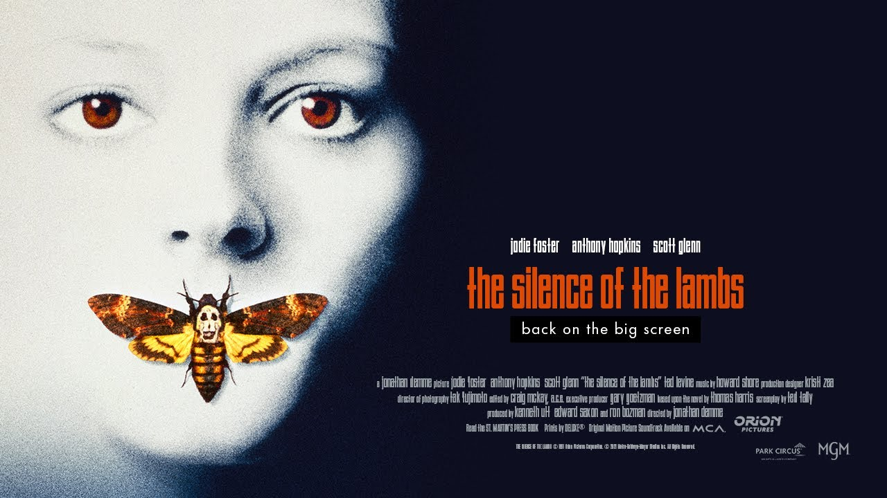
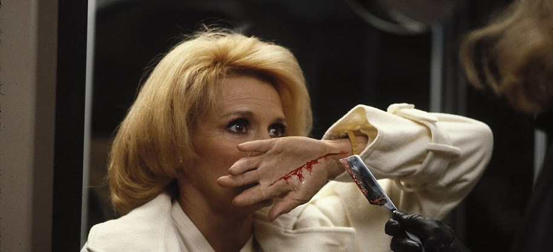
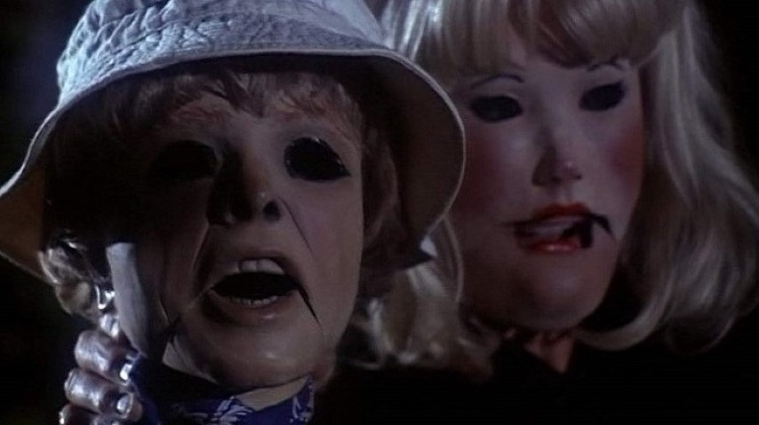
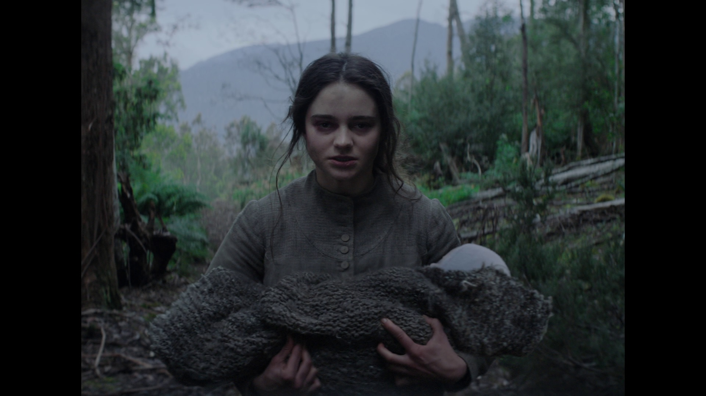
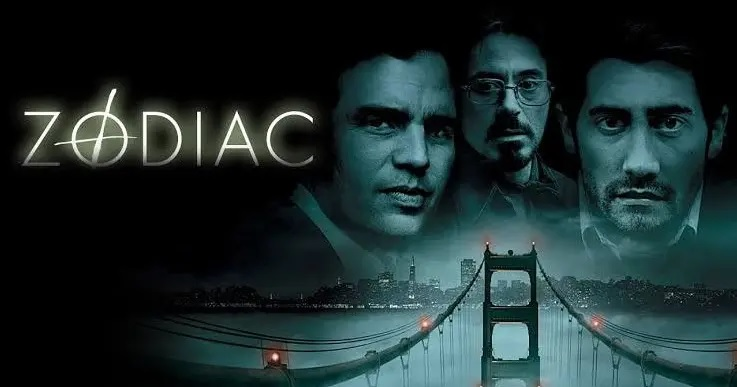

-
The Silence of the Lambs (1991)
Directed by
Jonathan DemmeSisters (1972)
Directed by
Brian De PalmaSplit screen mania! Ketchup blood! Only a young, wide-eyed director would have the gumption to use split screen so liberally. I mean, you’re literally filming twice the amount of footage, and orchestrating everything to line up just so must be terribly challenging. I gave “split screen” a search in Google Images and a screenshot from this film was the fifth image.
I remember watching Sisters many years ago and feeling like the twist ended up not being the twist I was hoping for, and I felt the same way after a recent repeat viewing. In fact, I don’t think the ending really works, and even Jennifer Salt (one of the lead actresses) admitted in an interview that she herself had no idea what it was supposed to mean.
Either way, it’s a really fun ride that’s nice to look at, and the score by Bernard Herrmann — Alfred Hitchcock’s composer of choice — is characteristically chilling and moody. I think De Palma must have been giddy beyond measure to work with Herrmann, as the final cut of the film places the score front-end-center at every opportunity.
Dressed to Kill (1980)
Directed by
Brian De PalmaTourist Trap (1979)
Directed by
David SchmoellerThe Nightingale (2018)
Directed by
Jennifer KentZodiac (2007)
Directed by
David Fincher